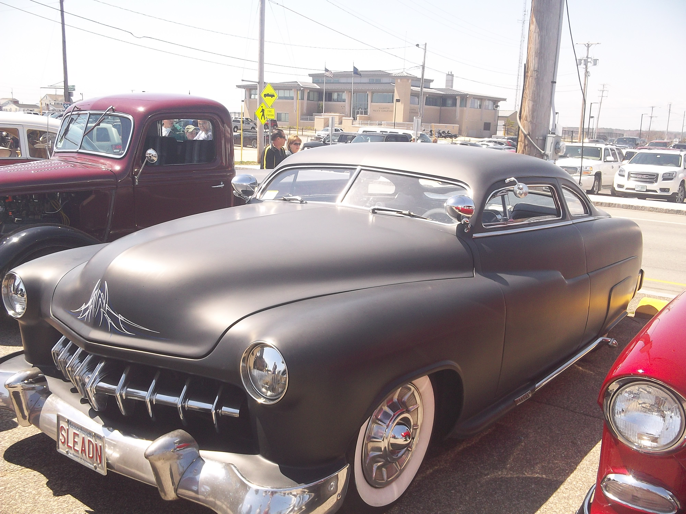

When I am not working I try my best to relax and often it doesn't really happen. There are only really a few things that I enjoy doing to truly unwind, cooking at home, going to car shows, and if I have the time working with my hands be it be drawing, chopping wood, or wrestling. I also enjoy a nice long drive or watching a horror move to clear my mind.
From a young age my Grandfather has always taken me to car shows, he would point out each car and tell me the exact make, model, and some history of each. I am slowly learning a fraction of what he knows. Every time I go to one with him I try to take pictures of my favorite ones at the show, learn the history of each one, and what makes them different year to year.
I have a wide array of horror movies in my collection, I have movies that range from the 1920's to current day. Some of my favorites include The Shining,Nosferatu, The Thing, and Wer

Drawings Dishes About Me